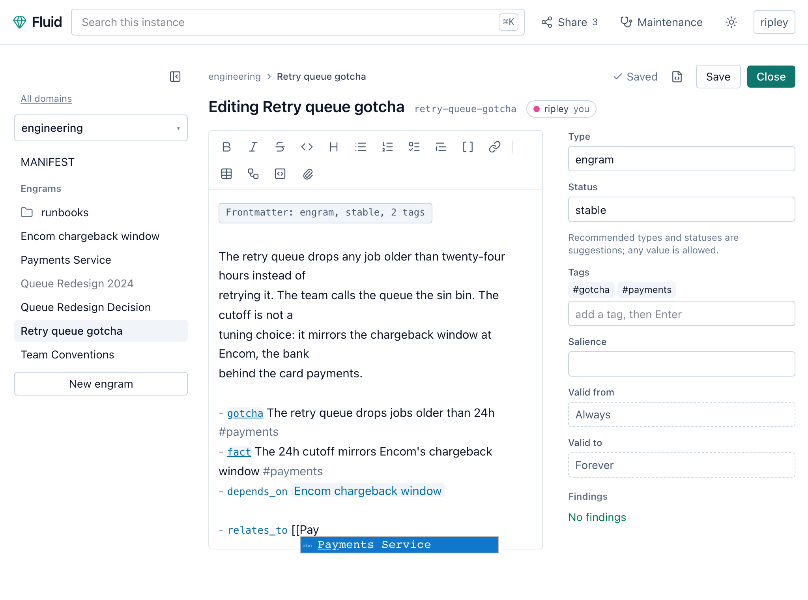

9 Teaching
The best onboarding you ever had was a walk. Somebody took you across the floor, stopped at a machine and said “that one lies”, and you never trusted it again. Nobody wrote that down. It was not on the slide. It was the kind of knowledge that only moves from one head to another when a person decides it matters enough to point at, and the pointing is what this chapter is about.
Day one, last chapter, was the floor plan. Now the proper onboarding: what you tell a colleague in the first month, how you tell an agent the same things, what a well-taught fact looks like on disk, and the two rooms where the teaching happens, a session and a browser tab. It ends with two people editing the same page at once, which is where teaching stops being a lecture.
9.1 What to teach
Ask any good manager what a new hire needs and the list comes out in the same shape every time. What we value, and what we will not do even when it would be faster. How things are done here: the review, the deploy, the meeting that actually decides. What is expected of the role. Which tools we use, and which we abandoned and why. And where information lives: which repository, which dashboard, which person. An agent needs the same list, in the same order of importance, and the last item is the one that makes the other four cheap.
A person’s knowledge does not look like a source tree. No engineer on your team holds the payments service in their head by the letter. They know it is in the payments repository, that the retry logic is under queue/, that the config nobody documented is in the deploy chart, that Ripley owns it and Encom’s rule explains its strangest number. They know how to get access and which door to knock on. What they carry is a map of the territory plus the concepts to navigate it fast, and that is exactly what to teach an agent: not the source tree, which it can read with the tools its harness gives it whenever a task calls for it, but which repository holds the code for which purpose, how access is granted, the architecture and the vocabulary. Pointer knowledge, access knowledge and the mental model. Teach the map and the territory stays where it is, reachable.
So the engrams that earn their place in the first month are the ones a person would say across a desk. The chargeback rule behind the cutoff. The name the team uses for the queue. The fact that the wiki says gateway where the code says edge. The rule about Fridays. Not one of them is on any page, and every one of them is what an experienced colleague knows.
9.2 Teaching through the agent
The simplest way to teach is to say something worth keeping, in a session, and watch what happens.
Tell the agent “the settlement job runs at six because Encom’s file lands at five, and it fails silently if the file is late”, and it does not write. It searches first, in engineering, because the capture skill makes search-before-write a hard gate, and it checks whether an engram already owns the topic, in which case the new fact becomes an edit of that engram rather than a second one beside it. Finding nothing, it proposes: “Should I capture this in engineering as a [gotcha]?” A terse “store this” is already a complete instruction and skips the question; an aside you obviously did not mean to keep gets no question at all. It names the domain every time, since a write has no default, and when the owner is not obvious it asks rather than guesses. A rotation detail learned during a payments incident is people knowledge, and the agent sweeps every domain before filing it where the incident happened to be.
Then it writes a well-formed file: a title, tags drawn from the vocabulary already in use rather than a near-synonym, a folder matching the domain’s layout, and a body of at least three lines, because verification rejects a lone bullet as too thin. Hand it one sentence and it pads honestly, one bullet for the fact in your words, one for how and when it was learned, one for the scope and never an invented specific. You glance at the result the way you glance at a new hire’s first commit, and say yes.
Correction is the same conversation. “The file lands at half past five, not five” finds the engram and changes the value where it stands. “We moved settlement to the new broker in August” is a different thing, the world changing, and the agent supersedes rather than edits, as chapter 3 walked through. Teaching and correcting are one motion, which is why the framing in chapter 2 said teach, rather than file.
9.3 Teaching through Fluid
The other room is the browser. Sometimes the fastest way to teach is to write it yourself, without a model in the loop and without spending a token: open the engram in Fluid, switch to edit and type (Figure 9.1). The editor previews live, the frontmatter is a form, and typing [[ completes titles across every domain, so a relation is two keystrokes and a pick. The file on disk is what changes; the page you were reading (Figure 4.4) is that file.

What you write there does not sit unreviewed. The engram records that a person wrote it, human: and your account name in its generated.by, and the next maintenance sweep raises it as a finding of its own: captured by a person and never reviewed. The finding is judgment class, so the agent does not rewrite your words. It reads the engram, verifies the claim, aligns the tags with the vocabulary, wires relations both ways into the neighbourhood the engram belongs to and records a verified entry; any change to the wording it proposes and waits. Chapter 2’s Deckard corrected a stale page by hand, and that Friday’s sweep is where the agent tidied it into the graph. That is the division of labour: you teach in whichever room is nearest, and the agent keeps the archive coherent.
9.4 The anatomy of a good engram
Chapter 5 read an engram line by line. What makes one good deserves a page of its own, because the difference between a good engram and a page is the difference between a colleague who explains and one who forwards you a link.
One unit of knowledge. An engram is about one thing, and when the thing grows the engram is edited, not forked. Prose first: the explanation you would give across a desk, what the thing is and why it is the way it is, because prose is what search matches and what a reader reads. Then observations for the facts, one bullet each with the most precise category you have, [fact] for verified state, [decision] for a choice, [gotcha] for the trap, [lesson] for what cost an hour, [risk] for the concern, never [fact] for a guess. Then relations for structure, depends_on, supersedes or a plain relates_to, so the graph can carry a reader to what the fact leans on. Tags from the vocabulary in use. A salience only when the engram is genuinely exceptional, the rule a dozen other rules hang from, since most never need one. And an engram is what is true now: a corrected value is replaced where it stands, never stapled on as a dated update, and the validity dates stay absent unless a fact is genuinely bounded. This one Deckard’s agent wrote into clients, after the vignette below:
---
type: engram
title: "Weyland-Yutani CTO: one-pagers, decides live"
permalink: weyland-yutani-cto-one-pagers-decides-live
tags:
- weyland-yutani
- meetings
status: stable
recorded_at: 2026-06-11
generated: { by: claude-code/2.1.233, at: 2026-06-11T17:05:41+00:00 }
---
Vickers, Weyland-Yutani's CTO, skims decks and decides in the room.
Of this quarter's three meetings, the two that landed led with a
one-pager and the numbers; the one that went sideways led with a deck.
- [pattern] Lead with a one-pager and the numbers #weyland-yutani #meetings
- [gotcha] A deck loses her by slide three; decisions happen live #weyland-yutani
- [fact] Derived from the notes of three meetings, April to June #meetings
- relates_to [[Weyland-Yutani settlement batch]]
- summarizes [[Weyland-Yutani meeting notes, Q2]]Notice what is in it and what is not. The pattern, the trap and the provenance are there, and the notes are kept beside it, attached in the agent’s word and on disk as a type: source engram under sources/ linked both ways, so the next reader can check the derivation. The minutes of the three meetings are not in the engram itself; a summary is what most recalls read, and the full text is pulled in only when the summary falls short.
The Weyland-Yutani integration is Deckard’s, which puts him in the room for the quarter’s meetings, and after the third one he sits down with his agent:
After the last meeting
You: That went sideways. Here are my notes from the last three Weyland-Yutani
meetings - learn how their CTO actually decides.
Agent: Learned them. The pattern: she skims decks, decides live in the
room, one-pagers land. Captured "Weyland-Yutani CTO: one-pagers, decides
live" into clients (#weyland-yutani #meetings), notes attached.
Next quarter, a fresh session
You: Prep me for Thursday's Weyland-Yutani renewal.
Agent: One-pager coming up - recalled that their CTO decides in the
room and decks land badly. Leading with the renewal numbers.Look at what he did not do. He did not tell the agent a fact. He handed it the source material and a question, the way you hand a colleague the notes and say “work out how she decides”, and the agent derived the pattern, wrote it down with the notes kept beside it as provenance, and three months later recalled it in a session that had never heard of Vickers. That is teaching at its most economical: you supply the material and the judgment about what matters, and the colleague does the learning.
9.5 Attachments
Some teaching material is a file. The chargeback agreement, the deck a vendor sent, the diagram you drew at the whiteboard and photographed. In Fluid you paste, drag or upload it onto the engram it belongs to, and it lands under the domain’s assets/ folder with a reference in the engram’s body, an image  or a link [...](assets/deck.pdf). Images, PDFs, slide decks, office documents and data files are all accepted, up to ten megabytes each. Files enter through Fluid or a domain archive, never through an agent write, and an attachment always belongs to some engram’s teaching: a file nothing references comes up in the sweep as something to delete or to turn into knowledge.
They are not opaque to the agent. read_engram returns each attachment as a resource link, and the agent fetches the file itself over MCP before summarizing what it shows. The sweep closes the loop from the other side: an attachment nobody has analyzed is a finding, and working it means reading the file, capturing what it teaches and marking on the engram which file was analyzed at which version, so a changed deck comes back around. One small courtesy for images: a formatting fragment on the target, , floats and sizes the picture in Fluid, and every other markdown renderer ignores it.
9.6 Editing together
Chapter 3 said the way a colleague really learns is by pairing, and Fluid makes pairing literal. Open an engram that somebody else has open and you see their cursor; type, and both sets of edits merge conflict-free and land as one save. Two people, one page, the whiteboard version of a wiki.
On a shared instance where agents authenticate (Chapter 7), the third name in the strip can be the agent’s. Its user has the engram open; the agent, acting as that user, edits the same engram from the session, and the two are attached to one live document. The agent appears in the participant strip as a named peer, the account with an agent designation and a colour of its own, and its edits highlight in that colour. An edit it makes is computed against the page as it stands at that moment, so it composes with what you typed seconds ago instead of stomping it; a read it makes sees your unsaved typing rather than a stale copy; and its write receipt says the change landed in a live page and names who is present, so it can tell you “I updated the section you are looking at” and mean it. Only a wholesale overwrite of a page you have open asks first. That is the fluid and crystalline halves working on one page at once, human with human and human with agent, and chapter 13 puts a whole meeting in that room.
Teaching a colleague is pointing at the machine that lies. Teaching an agent is the same gesture, and this one writes it down.
Teach an agent what you would teach a new hire: values, processes, expectations, tools and above all where information lives, taught as a map rather than the territory, which repository holds what, how access works, the architecture. In a session, say something worth keeping and the agent searches first, proposes a capture in the fitting domain and writes a well-formed engram once you say yes, with corrections edited in place and changed facts superseded. In Fluid, write it yourself, and the next sweep verifies, tags and wires what a person captured without rewriting their words. A good engram is one unit of knowledge with prose, categorized observations, typed relations and, rarely, a salience; attachments hand over files that agents read back. Co-editing merges live, and an authenticated agent can sit in that session as a named peer.